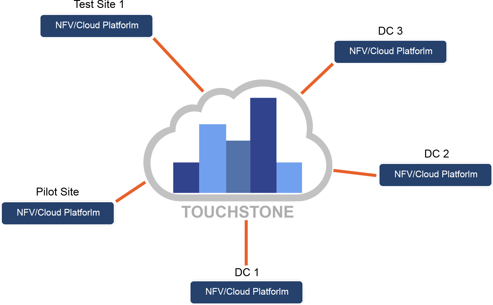

We make transformation to Cloud Infrastructure successful!
NFV splits responsibility for application characteristics between NFVI and VNF vendors. Hence testing that demarcation point becomes essential in all phases:
Benchmark for vendor selection
Acceptance test.
NFVI performance SLA validation.
Pre-VNF deployment testing.
CI/CD testing for LCM.
Trouble shooting.
OPNFV “certification” testing
Test Automation of all test phases in an NFV infrastructure’s life cycle.
Constant flow of new Test Cases as NFV Open-Source components evolve.
A flexible KPI validation tool that requires no dedicated HW.
Embedded support for troubleshooting issues faced during test execution.
A way to maximize efficiency of Lab- HW usage
Essential Integration Point between vendors (orange dots)

Clear technical Service Level Agreements (SLAs) at Integration Points (orange dots above) are required for VNFs to be able to commit to their performance SLAs. Therefore, the NFVI’s SLA compliance becomes the operator’s commitment to the VNF vendors. Consequently, NFVI SLAs must be verified and guaranteed for Operators to be able to require VNFs’ SLA compliance from the VNF vendors. NFVI SLA compliance tests are needed in pre-operation validation as well as during the full Life Cycle.
Automation is key when the demand for tests increases, so we developed Touchstone.
Touchstone is a Test Suite Manager. (A Test Suite (TS) is a collection of Test Cases (TC) which are executed under control of one Test Engine). Touchstone enables test organizations to configure, execute and interpret results from test suites in a homogenous way, independent of the test framework used for test case development. And compare the results with the predefined SLAs.
It also enables a tester to create and automatically run new test suites based on the automated test cases with a specific configuration that the integrated test suites consist of. Touchstone is delivered with a set of pre-integrated open source Test Suites and Test Suites developed by VoerEir, all in all several thousands of automated Test Cases with a focus on testing a NFV Infrastructure. Touchstone’s field of application spans over Functional, Performance and Robustness testing with specific focus on NFVI performance SLA validation.